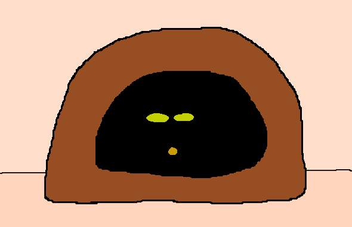
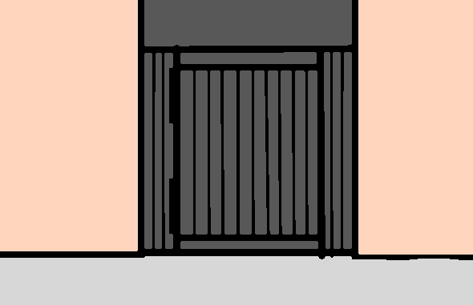
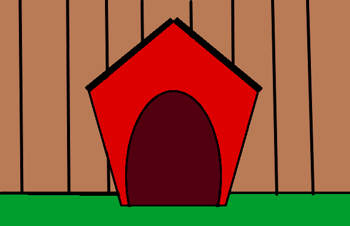

Housing da Hound


Overview
Dog House Overview
Welcome to the Dog house section, here we will talk about keeping dogs inside or outside and how to limit their travel to off limit rooms. Similarly to welcoming home a new baby dogs are no different, storing small chocking items and picking up electrical elements are a must. Accidents may happen especially for puppy or non potty-trained dogs, buying cleaning supplies and removing rugs from your dogs area should be done. Speaking of safe place an area with a dog bed, some treats, and some toys will help with decompression and relaxation.
Sleeping habits
Your dog being hyperactive or extremely sluggish could be more than just irregular sleeping patterns, here are some thing you might want to know. Don't be worried about long sleeping times, while humans usually get 8 hours a day dongs can sleep for a total 14 hours a day, over 18 for puppies. Like a lot of things the size and breed of the dog affects its sleeping pattern, larger dogs sleep more while smaller dogs sleep less however working dogs that are more active sleep less regardless. Daily naps are natural whether due to boredom or low energy levels don't try and keep them awake daily rest is important to them. Consult a veterinarian if their established pattern changes suddenly or they being to show constant signs or lethargy.
Dog gates and off limit areas
Dogs are curios, natural exploders, lets make sure they don't discover something dangerous. While cleaning up choking hazards and tripping areas are the main reasons others also come when limiting a dogs access to certain areas. To reduce begging and dog hair in food limiting access to the kitchen is a must and to stop the taring up of trash and or important documents the bathroom and office areas should also be off limits. For dogs that are to young for training physical barriers like gates and or certain sprays can be used to limit exploration, sprays can also be used to discourage the chewing of cabinets and furniture. When training comes in start small with "sit and stay training" with a reward for completion then walking up to the area and stopping before you enter, rewarding them if they stop to. Ensure your dog has a space for themselves, with sun toys and a bed traditional or cave like.
Dogs Outside vs Inside
Should your dog be outside or inside?
Dogs for the most part should stay inside when not using the bathroom or walking for play / exercise due to many reasons.
One is untrained or young dogs may wander off if the area isn't secured or may chase another dog or animal causing them to get lost.
Another factor against outdoor living is environmental factors like temperature may be too hot or cold for certain breeds, for dogs with thick fur and no anti flea protection may develop them and or parasites from outside.
Lastly dogs are at their core social creatures and required interaction through playing, grooming, or just being beside their owner.
Without this they may start to exhibit behavior problems like aggression or barking.
In the very rare case that a dog has to stay outside they'll require a new set activities tailored to their experience prescribed by a licensed veterinarian and will require regular interaction.
Housing da Hound
